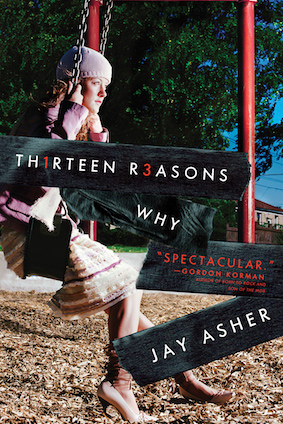
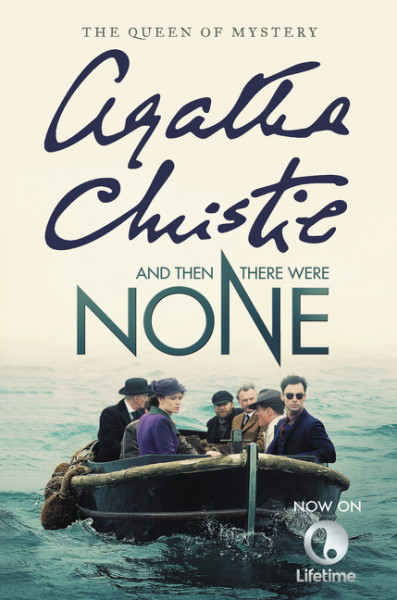
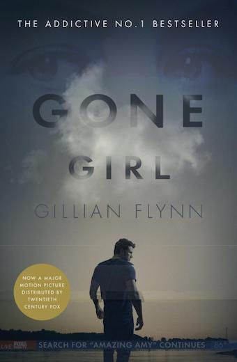

Rumor has it that Alice Franklin is a slut. It's written all over the bathroom stall at Healy High for everyone to see. And after star quarterback Brandon Fitzsimmons dies in a car accident, the rumors start to spiral out of control.
In this remarkable debut novel, four Healy High students—the girl who has the infamous party, the car accident survivor, the former best friend, and the boy next door, tell all they know.
But exactly what is the truth about Alice? In the end there's only one person to ask: Alice herself.

"You can't stop the future."
"You can't rewind the past."
"The only way to learn the secret . . . is to press play."
Clay Jensen returns home from school to find a strange package with his name on it lying on his porch. Inside he discovers several cassette tapes recorded by Hannah Baker, his classmate and crush, who committed suicide two weeks earlier. Hannah's voice tells him that there are thirteen reasons why she decided to end her life. Clay is one of them. If he listens, he'll find out why.

First, there were ten, a curious assortment of strangers summoned as weekend guests to a private island off the coast of Devon. Their host, an eccentric millionaire unknown to all of them, is nowhere to be found. All that the guests have in common is a wicked past they're unwilling to reveal, and a secret that will seal their fate. For each has been marked for murder. One by one they fall prey. Before the weekend is out, there will be none. And only the dead are above suspicion.

On a warm summer morning in North Carthage, Missouri, it is Nick and Amy Dunne's fifth wedding anniversary. Presents are being wrapped and reservations are being made when Nick's clever and beautiful wife disappears. Husband-of-the-Year Nick isn't doing himself any favors with cringe-worthy daydreams about the slope and shape of his wife's head, but passages from Amy's diary reveal the alpha-girl perfectionist could have put anyone dangerously on edge. Under mounting pressure from the police and the media, as well as Amy's fiercely doting parents, the town golden boy parades an endless series of lies, deceits, and inappropriate behavior. Nick is oddly evasive, and he's definitely bitter—but is he really a killer?